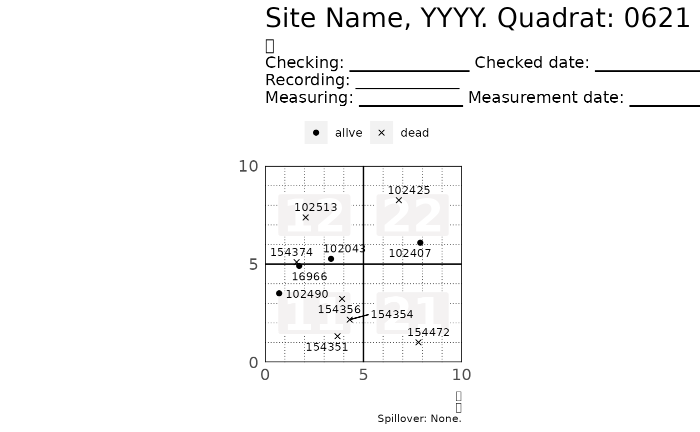
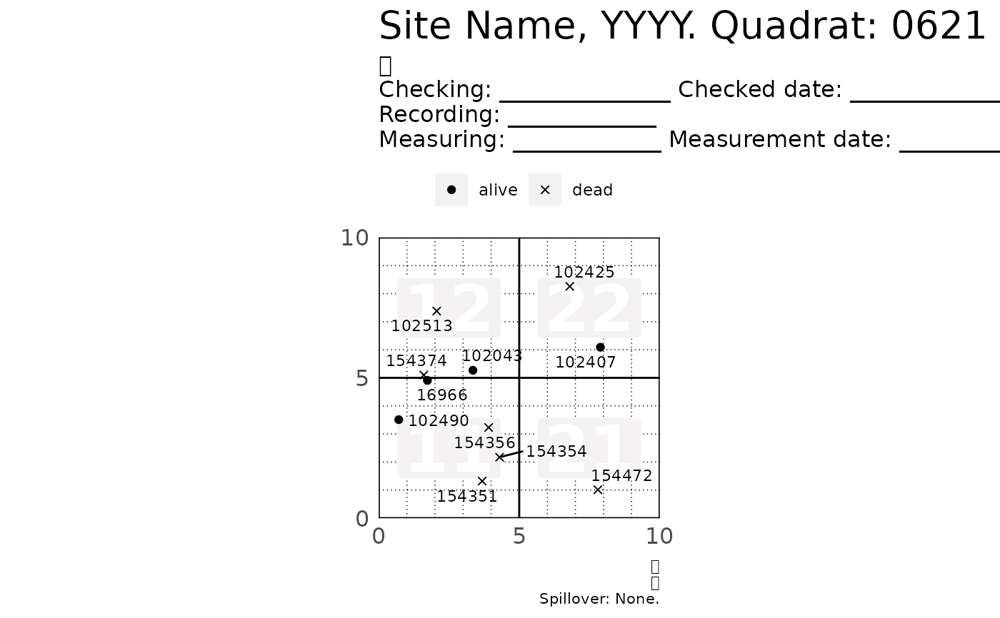
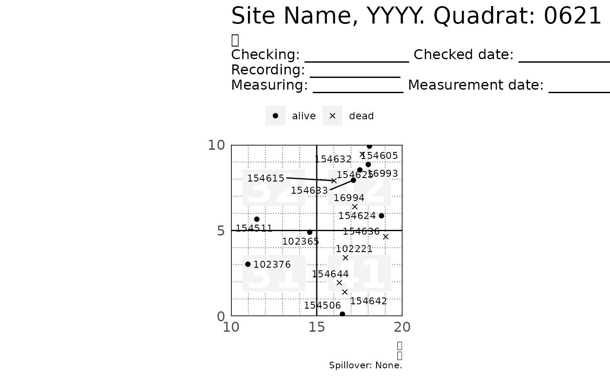
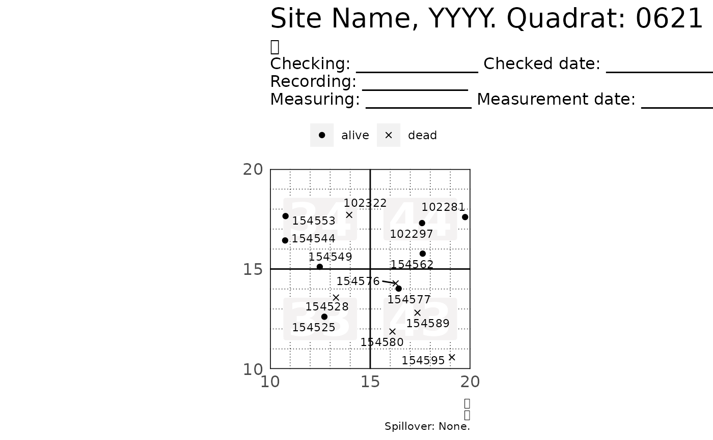
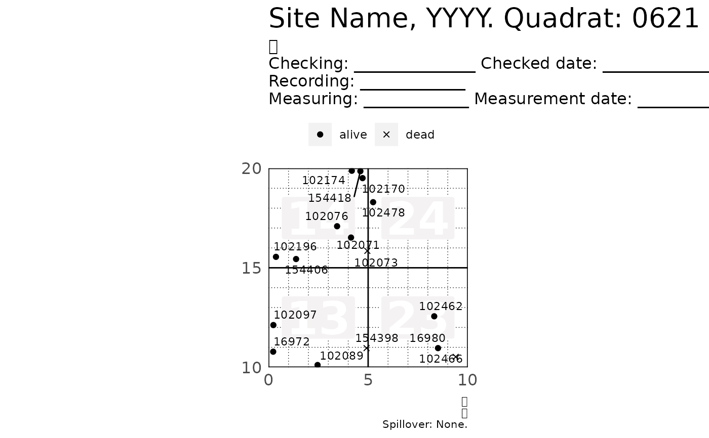
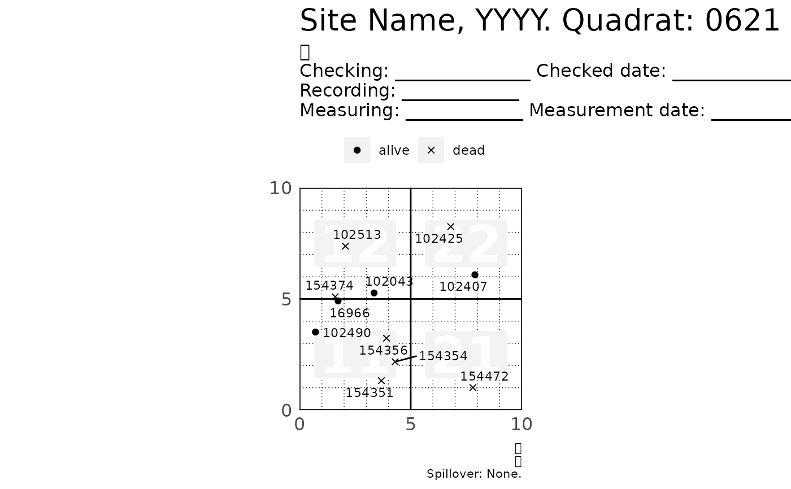
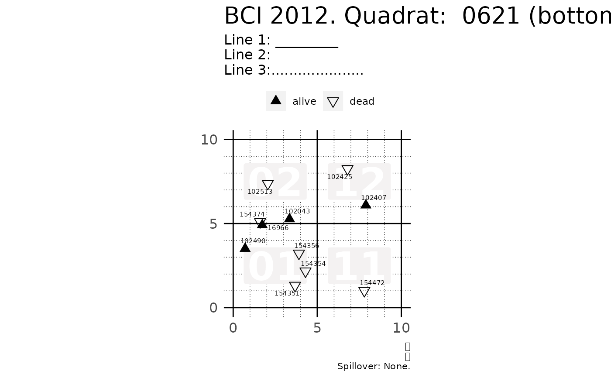
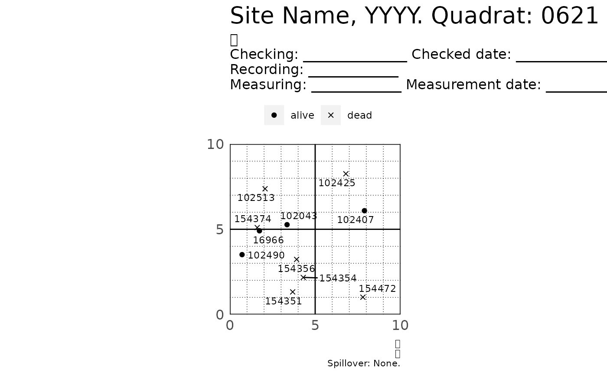
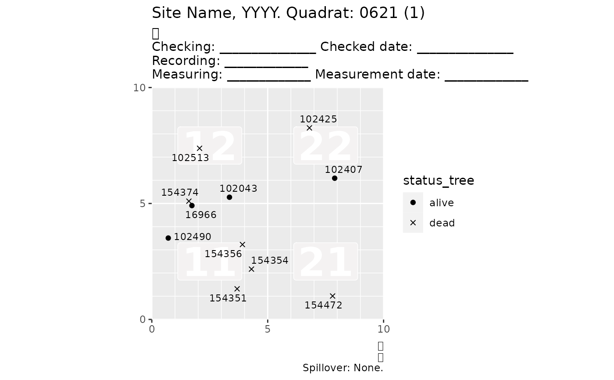
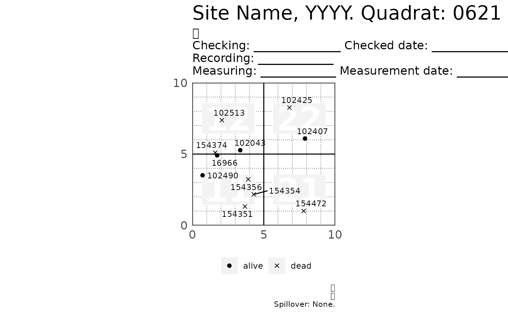

R/plot_tag_status_by_subquadrat.R
plot_tag_status_by_subquadrat.RdThis function plots tree tags by status and outputs a list of plots that can
be printed on a .pdf file. Each plot shows four subquadrats within a quadrat.
The symbols on the plot represent the status of each tree -- not the status of
each stem. Although you should likely provide data of only one or two
censuses, plot_tag_status_by_subquadrat() will summarize the data to reduce
overplotting. The data on the plot summarizes the history of each stem across
all censuses provided. Each tag will appear in the plot only once or twice:
A tag will appear once if it belongs to a tree which status was unique across all censuses provided -- either "alive" or "dead".
A tag will appear twice if it belongs to a tree which status was "alive" in at least one census, and also "dead" in at least one other census. This feature avoids unintentional overplotting and makes interpreting the plot easier.
plot_tag_status_by_subquadrat( vft, x_q = 20, x_sq = 5, y_q = 20, y_sq = 5, subquad_offset = NULL, bl = 1, br = 2, tr = 3, tl = 4, title_quad = "Site Name, YYYY. Quadrat:", show_page = TRUE, show_subquad = TRUE, point_shape = c(19, 4), point_size = 1.5, tag_size = 3, header = header_tag_status(), theme = theme_tag_status(), move_edge = 0 )
| vft | A ForestGEO ViewFullTable (dataframe). |
|---|---|
| x_q, y_q | Size in meters of a quadrat's side. For ForestGEO sites, a common value is 20. |
| x_sq, y_sq | Size in meters of a subquadrat's side. For ForestGEO-CTFS sites, a common value is 5. |
| subquad_offset |
subquad_offset = NULL subquad_offset = -1
--------------------- -------------------
14 24 34 44 04 14 24 34
13 23 33 43 03 13 23 33
12 22 32 42 02 12 22 32
11 21 31 41 01 11 21 31
|
| bl, br, tr, tl | Number or character giving the label of the four subquadrats on each or the four divisions of a quadrat: bottom left (bl), bottom right (br), top right (tr), and top left (tl). |
| title_quad | A string to use as a title. |
| show_page | Logical; |
| show_subquad | Logical; |
| point_shape | A vector of two numbers giving the shape of the points to
plot (see possible shapes in the documentation of ? |
| point_size | A number giving points size. Passed to
|
| tag_size | A number giving tag size. Passed to ggrepel::geom_text_repel. |
| header | A string to use as a header (see headers). |
| theme | An object of class "theme". |
| move_edge | A number to adjust the extension of the grid lines beyond the plot limits. |
A list of objects of class "ggplot".
Useful ideas and guidance came from Suzanne Lao, Stuart Davis, Shameema Jafferjee Esufali, David Kenfack and Anudeep Singh. Anudeep Sinh also wrote the algorithm to calculate subquadrats.
graphics::points(), ggplot2::geom_point(), ggplot2::theme()
header_tag_status(), theme_tag_status(), fgeo.tool::add_subquad(),
ggrepel::geom_text_repel.
Other plot functions:
autoplot.fgeo_habitat(),
autoplot.sp_elev(),
autoplot_by_species.sp_elev(),
elev(),
plot_dbh_bubbles_by_quadrat(),
sp_elev(),
sp()
Other functions to list plots from ForestGEO ViewFullTable:
plot_dbh_bubbles_by_quadrat()
Other functions to plot tag status:
header_tag_status(),
theme_tag_status()
assert_is_installed("fgeo.x") # Create a small VieFullTable first <- function(x) x %in% sort(unique(x))[1] small_vft <- subset(fgeo.x::vft_4quad, first(CensusID) & first(QuadratID)) p <- plot_tag_status_by_subquadrat(small_vft) # Showing only two sub-quadtrats p[1:2]#> $`621_1`#> Warning: Use of `prep_df$tag` is discouraged. Use `tag` instead.#> #> $`621_2`#> Warning: Use of `prep_df$tag` is discouraged. Use `tag` instead.#># To print all plots into a .pdf file see `?pdf()` plot_tag_status_by_subquadrat(small_vft)#> $`621_1`#> Warning: Use of `prep_df$tag` is discouraged. Use `tag` instead.#> #> $`621_2`#> Warning: Use of `prep_df$tag` is discouraged. Use `tag` instead.#> #> $`621_3`#> Warning: Use of `prep_df$tag` is discouraged. Use `tag` instead.#> #> $`621_4`#> Warning: Use of `prep_df$tag` is discouraged. Use `tag` instead.#># Be careful if filtering by DBH: You may unintentionally remove dead trees. # * If you filter by `DBH`, you loose the dead trees becaue their `DBH = NA` # * You should explicietly inlcude missing DBH values with `is.na(DBH)` include_missing_dbh <- subset(small_vft, DBH > 20 | is.na(DBH)) p <- plot_tag_status_by_subquadrat(include_missing_dbh) # Showing only the first plot to keep the output short p[[1]]#> Warning: Use of `prep_df$tag` is discouraged. Use `tag` instead.# Customizing the maps ---------------------------------------------------- # Common tweaks p <- plot_tag_status_by_subquadrat( small_vft, title_quad = "BCI 2012. Quadrat: ", bl = "bottom-left", br = "bottom-right", tr = "top-right", tl = "top-left", header = "Line 1: _________\nLine 2:\nLine 3:.....................", subquad_offset = -1, point_size = 3, point_shape = c(17, 6), tag_size = 2, move_edge = 0.5 ) p[[1]]#> Warning: Use of `prep_df$tag` is discouraged. Use `tag` instead.# Skip R CMD check for speed # \donttest{ p <- plot_tag_status_by_subquadrat( small_vft, show_page = FALSE, show_subquad = FALSE ) p[[1]]#> Warning: Use of `prep_df$tag` is discouraged. Use `tag` instead.# Themes library(ggplot2) p <- plot_tag_status_by_subquadrat(small_vft, theme = theme_gray()) p[[1]]#> Warning: Use of `prep_df$tag` is discouraged. Use `tag` instead.# Tweaking the default theme of plot_tag_status_by_subquadrat() # For many more options see ?ggplot2::theme small_tweak <- theme_tag_status(legend.position = "bottom") p <- plot_tag_status_by_subquadrat(small_vft, theme = small_tweak) p[[1]]#> Warning: Use of `prep_df$tag` is discouraged. Use `tag` instead.# }